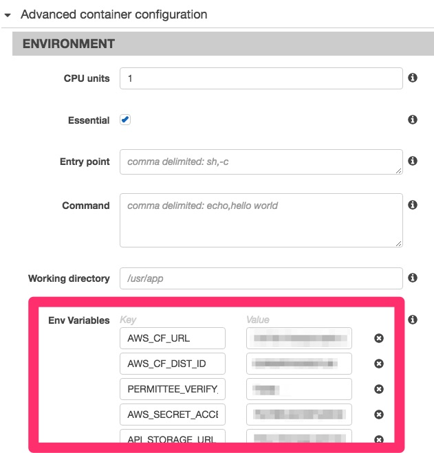

RFDP : Raccoony's Favorite Django Plugins
플러그인 이름 : django-environ
저장소 : https://github.com/joke2k/django-environ
공식 문서 : http://django-environ.readthedocs.org/
쓰임새
배포 과정에서 Docker 등의 컨테이너 환경을 도입했다면 환경변수를 통해 각종 설정값을 관리할 텐데요. 데이터베이스 하나 설정하는 데만도 대여섯 개의 값이 필요한 상황이 불편하기도 하고, 환경변수마다 매번 os.environ.get을 입력하기도 귀찮고, 또 개발 환경을 설정하기 위해 export를 해줘야 하는 상황도 귀찮죠.
django-environ 패키지는 이러한 불편함을 덜어 줍니다.
설치
pip install django-environ
적용하기
1. 먼저 settings.py에서 빼내고 싶은 환경변수들을 .env 파일에 모아두세요.
# .env
DEBUG=on
DATABASE_URL=mysql://db_user_id:db_user_password@db_host_address:db_host_port/db_name
SECRET_KEY=...
MY_ENV_VALUE=...
2. 그 다음에 settings.py 파일을 수정합니다.
# settings.py
import environ
root = environ.Path(__file__) - 3 # three folder back (/a/b/c/ - 3 = /)
env = environ.Env(DEBUG=(bool, False),) # 기본 값
environ.Env.read_env() # .env 파일이 있으면 읽음
SITE_ROOT = root()
DEBUG = env('DEBUG') # 환경변수에 DEBUG값이 없으면 False로 설정됨
TEMPLATE_DEBUG = DEBUG
DATABASES = {
'default': env.db(), # DATABASE_URL이 환경변수에 없으면 ImproperlyConfigured 예외 던짐
}
public_root = root.path('public/')
MEDIA_ROOT = public_root('media')
MEDIA_URL = 'media/'
STATIC_ROOT = public_root('static')
STATIC_URL = 'static/'
SECRET_KEY = env('SECRET_KEY') # SECRET_KEY가 환경변수에 없으면 ImproperlyConfigured 예외 던짐
MY_ENV_VALUE = env('MY_ENV_VALUE', default='test_value') # MY_ENV_VALUE가 환경변수에 없으면 test_value로 설정됨
3. 마지막으로 배포 환경용 설정값을 컨테이너에 주입합니다.
저는 AWS의 ECS 서비스를 사용하고 있으므로 Task Definition에 넣어주었습니다.

자세한 사항은 공식 문서를 참고하세요.